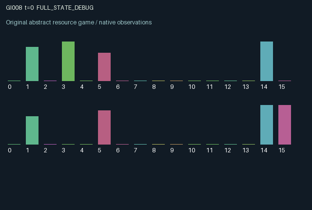

GI008 / LEGACY_ARRAY
astra-d2-00008: delayed counterflow delivery and receiver gates
2 agents5 actions16 observation columns32 original horizonRuntime: PASS
Release verification episode
Untrained uniform legal actions. Actual JAX state sampled along the full original episode; full-state debug camera. No human performance or learning claim.

Run this game
crucibles play --game 8
Start Python locally, then open the address printed by the terminal. Installation, multiplayer, takeover and keyboard controls →
Objective, rewards & ending
Exact task contract
{
"termination": "Original kernel t >= 32; see mechanism and source"
}Declared per-step reward bounds: -1.0 to 1.0. Observability: source_defined.
Rules
Original mechanism document (historical status wording retained)
# astra-d2-00008: delayed counterflow delivery and receiver gates This is an original, parentless source proposal. Its source has not been executed or validated by the author. It is related to generic delayed transport, signaling, and receiver-controlled coordination mechanisms; novelty, nonisomorphism, eligibility, and learning effectiveness are not asserted. ## Persistent causal structure Each agent owns a three-position outbound pipeline, energy, a receiver gate, and a fixed private preference for one of two package types. An agent's outbound pipeline terminates at the other agent. An arriving package succeeds only if its type matches the receiver's gate at the beginning of the step. The sender therefore commits before delivery, while the recipient controls acceptance later. Successful receipt also replenishes the recipient's future sending capacity. Actions are 0 wait, 1 launch type 0, 2 launch type 1, 3 set next-step gate to 0, and 4 set next-step gate to 1. Launching requires one energy unit; an unaffordable launch produces no package and no launch cost. Every action remains legal. Each step supplies 0.2 energy, and a successful incoming delivery supplies another 0.5, with capacity three. A new package occupies the last queue position. It is delivered on the third subsequent call after insertion. Arrivals use the old gate; a tuning action changes the gate for the following call. New launches use pre-step energy, so an arrival cannot fund a launch chosen in the same call. These timing rules create advance commitment and endogenous reciprocal capacity. ## Information and incentives Agents see their own preference, full outbound queue, current public gates and energy levels, the type of the package arriving next at their own receiver, and only the occupancy of the following incoming position. They do not directly see the other agent's preference or the newest incoming queue position. The observed gate can serve as an imperfect signal of the recipient's preference. A matched arrival has value 1 when preferred and 0.6 otherwise. Each reward is 0.5 times own incoming value plus 0.4 times the other agent's incoming value, minus 0.05 for a successful launch and 0.05 for an unmatched incoming package. Thus the reward lies in [-0.1, 0.9], within the declared [-1, 1] envelope. Sending can help the partner while also paying the sender after the delay; gate choices can accept or waste the partner's committed investment. Terminal queued packages and all other state are retained. ## Observation columns 0 elapsed time / 32; 1 own energy / 3; 2 own gate; 3 own private preference; 4 other gate; 5 other energy / 3; 6-8 own queue positions, encoded as 0 empty, 0.5 type 0, 1 type 1; 9 next incoming package with the same encoding; 10 occupancy of the subsequent incoming position; 11 most recent incoming value; 12 most recent outgoing value; 13 most recent unmatched incoming indicator; 14 current launch affordability; 15 agent index. ## Scope and possible failure modes The mechanism may admit simple repeated conventions, inefficient gate oscillations, or withholding. Hidden preference is not a claim of strategic complexity. Rewards, the bilateral dependence, and the stated timing require trusted validation; no benchmark or outcome evidence was consulted.
Commands
0Action 0; see mechanism and source
1Action 1; see mechanism and source
2Action 2; see mechanism and source
3Action 3; see mechanism and source
4Action 4; see mechanism and source
Roles & abilities
agent_0 Original legacy agent; see mechanism and source
agent_1 Original legacy agent; see mechanism and source
Observation permissions
Training receives only the original observation rows. Role cameras use declared visibility; debug cameras are explicitly marked. Local benchmark records log debug exposure and role takeover history.
Exact observation layout
[]
Entity visibility & attributes
[]
Actual verification & provenance
Per-game execution receipt
{
"game": "gi008",
"status": "PASS",
"verification_revision": 2,
"source_sha256": "39975211860173e6db4c3c89bc09c262a10e801ad53a5ade41ed0a8140864b4e",
"seed": 20261101,
"runtime": {
"jax": "0.4.38",
"numpy": "1.26.4",
"devices": [
"TFRT_CPU_0"
]
},
"dimensions": {
"num_agents": 2,
"observation_size": 16,
"num_actions": 5,
"max_steps": 32
},
"checks": {
"eager_reset": {
"status": "PASS",
"seconds": 0.9831969738006592
},
"observation_spaces_legal_masks": {
"status": "PASS",
"seconds": 0.22177886962890625
},
"eager_step": {
"status": "PASS",
"seconds": 0.503793478012085
},
"jit_reset": {
"status": "PASS",
"seconds": 0.5379700660705566
},
"jit_step": {
"status": "PASS",
"seconds": 0.26331090927124023
},
"eager_jit_integer_parity_float_measurement": {
"status": "PASS",
"seconds": 0.0
},
"jit_vmap_reset": {
"status": "PASS",
"seconds": 0.5537827014923096
},
"jit_vmap_step": {
"status": "PASS",
"seconds": 0.22285103797912598
},
"outer_autoreset_api": {
"status": "PASS",
"seconds": 0.7399744987487793
},
"full_original_horizon_episode_and_render": {
"status": "PASS",
"seconds": 1.2928338050842285
}
},
"human_scores": null,
"browser_controls": "PENDING",
"failures": [],
"elapsed_seconds": 6.073510408401489,
"float_parity_max_abs": 0.0,
"numerical_parity": "EXACT",
"raw_terminal_absorbing": "NOT_PART_OF_ORIGINAL_LEGACY_CONTRACT",
"terminal_outer_reset": "PASS",
"episode_steps": 32,
"scripted_random_returns": [
3.26000002771616,
3.150000024586916
],
"terminal": true,
"demo_information": "FULL_STATE_DEBUG",
"demo_frames": 33,
"render_roles_checked": 2
}Chromium control verification
{
"game": "gi008",
"status": "PASS",
"human_scores": null,
"engineering": true,
"checks": [
"catalog_selected_and_real_native_reset",
"dom_queue_and_native_step",
"second_participant_ownership_and_native_joint_step",
"all_roles_individually_controllable_no_role_cap",
"explicit_debug_camera",
"release_to_pure_ai_without_reset"
],
"ui_sha256": "15b5861d23b3c42811865c954d5a988280bbfd21cf8e93754be2437a027158c5",
"seconds": 2.87884521484375
}Original identity and file hashes
{
"id": 8,
"key": "gi008",
"title": "astra-d2-00008: delayed counterflow delivery and receiver gates",
"summary": "",
"tags": [],
"family": "legacy_array",
"dimensions": {
"num_agents": 2,
"observation_size": 16,
"num_actions": 5,
"max_steps": 32
},
"source_sha256": "39975211860173e6db4c3c89bc09c262a10e801ad53a5ade41ed0a8140864b4e",
"manifest_sha256": "03b0bd85a7cbd94abd11301e0295ff25788a4ddfbdf87944ee0a48cb854efc29",
"files": [
{
"file": "candidate.py",
"sha256": "39975211860173e6db4c3c89bc09c262a10e801ad53a5ade41ed0a8140864b4e",
"bytes": 3901,
"origin": "work/exp_2/astra_generation/discovery_v2/initial/candidate_00008/attempt_00/candidate.py"
},
{
"file": "mechanism.md",
"sha256": "8a267cc1ff8ad9f52d980ab86d86b62a6f45b03b98626dfdaf804b26d154a58b",
"bytes": 3309,
"origin": "work/exp_2/astra_generation/discovery_v2/initial/candidate_00008/attempt_00/mechanism.md"
}
],
"original_status": "LEGACY_SOURCE",
"original_saved_replay": false,
"release_validation": "PASS",
"human_scores": null,
"browser_validation": "PASS"
}